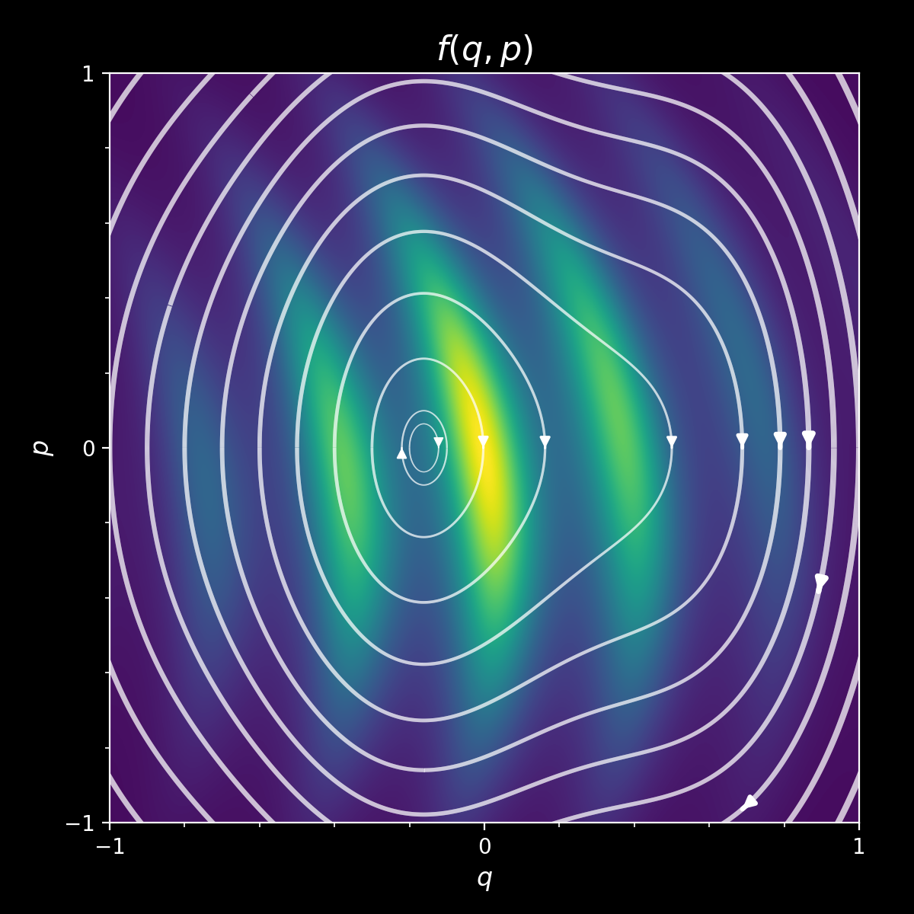
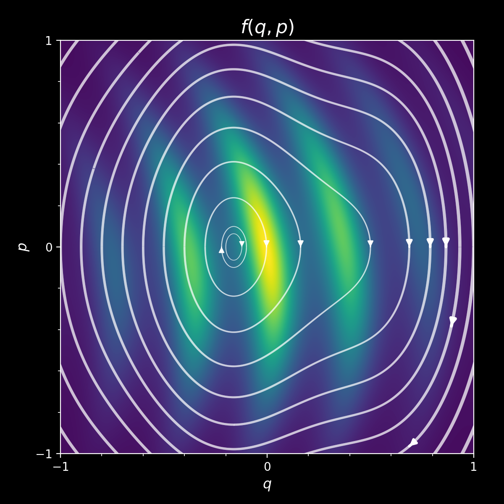
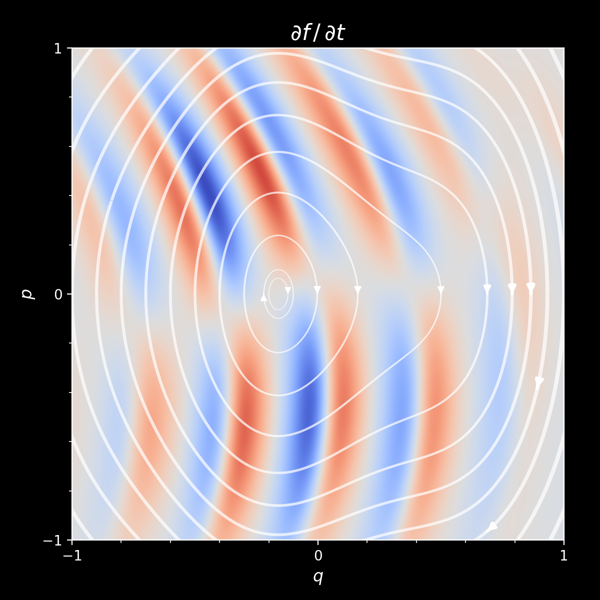
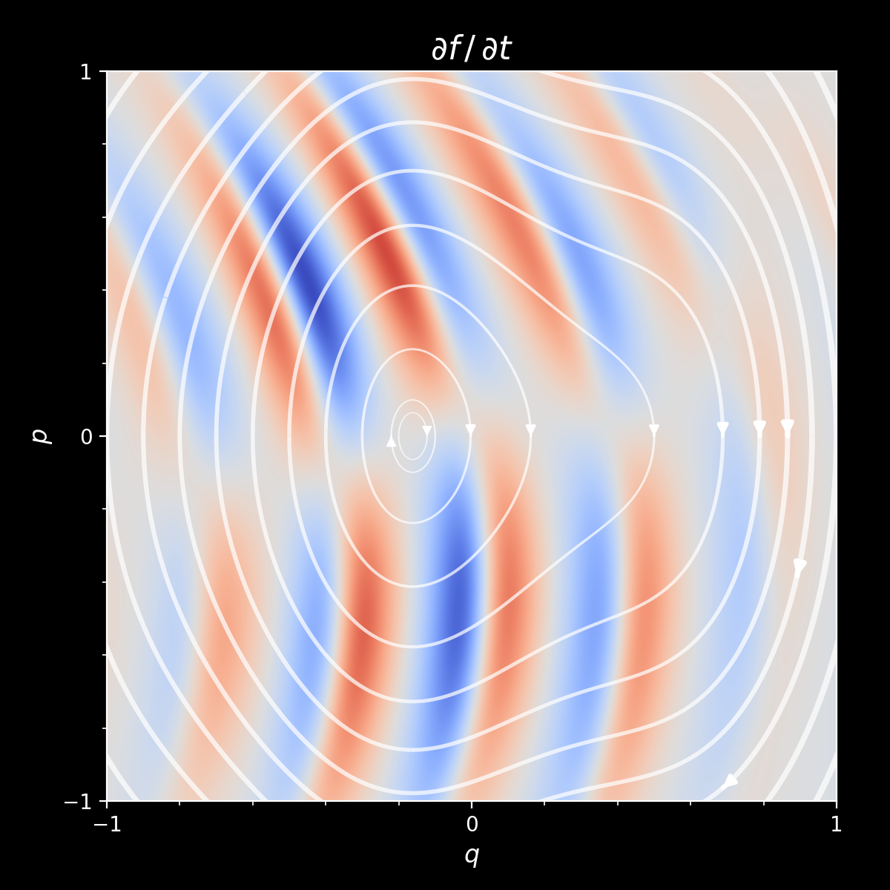
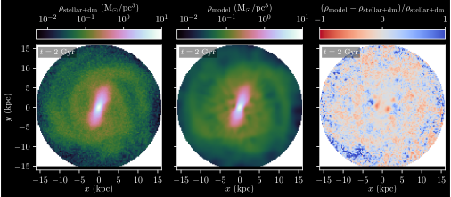
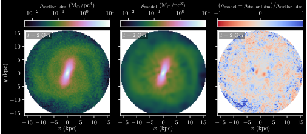

Measuring the Milky Way's Mass with Gaia

Gregory M. Green, Max Planck Institute for Astronomy, Heidelberg
Astro Data Science Discussion Group
Cambridge University, 24 November 2025

Why?

Dark-matter distribution
ΛCDM does well on large scales.
What about at sub-galactic scales?
Small-scale structure is sensitive to dark-matter properties.
Gaia is revolutionizing our picture of the Milky Way
Kinematic measurements of tens of millions of stars.
An unprecedented dataset for exploring Galactic dynamics.
Theory
Gaia is delivering a snapshot of stellar positions and velocities: $\left\{ \vec{x} , \vec{v} \right\}$
Accelerations tell us about the potential: $$ \frac{\mathrm{d}\vec{v}}{\mathrm{d}t} = -\nabla \Phi \left( \vec{x} \right) \, . $$
$\mathrm{d}\vec{v}/\mathrm{d}t$ is only rarely observable (as of yet).
Knowing $\Phi\left(\vec{x}\right)$ would tell us the distribution of total mass (Baryonic + dark) in the Milky Way.
How to connect $\Phi\left(\vec{x}\right)$ with $\left\{ \vec{x} , \vec{v} \right\}$? Stationarity.
Stationarity assumption
Galaxy doesn't statistically change over time.

 

 


Hamiltonians, distribution functions & stationarity
Hamiltonian: $$\mathcal{H} = \frac{p^2}{2m} + m\Phi\left(q\right) \, ,$$ where $q$ are spatial coordinates, and $p$ are momenta.
$\mathcal{H}$ determines the flow of particles through phase space: $$ \dot{q} = \frac{\partial\mathcal{H}}{\partial p} , \ \ \ \dot{p} = -\frac{\partial\mathcal{H}}{\partial q} \, . $$
$\mathcal{H}$ determines how a distribution function $f\left(q,p\right)$ will change over time.
Collisionless Boltzmann Equation (CBE): $$ \frac{\mathrm{d}f}{\mathrm{d}t} = \frac{\partial f}{\partial t} + \sum_{\mathrm{dimension}\ i} \! \left( p_i \, \frac{\partial f}{\partial q_i} -\frac{\partial \Phi}{\partial q_i} \frac{\partial f}{\partial p_i} \right) = 0 \, . $$
⇒ Adjust $\Phi\left(q\right)$ until $\frac{\partial f}{\partial t} \rightarrow 0$ everywhere.
There may be no $\Phi\left(q\right)$ that solves the equation everywhere!
We need to be able to calculate gradients of the distribution function:
$$ \require{color} \sum_{\mathrm{dimension}\ i} \! \left( v_i \, {\color{cyan} \frac{\partial f}{\partial x_i}} -\frac{\partial \Phi}{\partial x_i} {\color{cyan} \frac{\partial f}{\partial v_i}} \right) = 0 \, . $$
We need to be able to calculate gradients of the potential:
$$ \sum_{\mathrm{dimension}\ i} \! \left( v_i \, \frac{\partial f}{\partial x_i} -{\color{lightgreen} \frac{\partial \Phi}{\partial x_i}} \frac{\partial f}{\partial v_i} \right) = 0 \, . $$
⇒ Use machine-learning tools to model the distribution function and potential.
Method
“Deep Potential”
Fitting the distribution function

Normalizing flows
Invertible transformation: $\vec{x} \leftrightarrow \vec{y}$
$p \left( \vec{x} \right)$ is simple, but $p \left( \vec{y} \right)$ is complicated.
Allow sampling and evaluation of $p\left(\vec{y}\right)$.
FFJORD: Grathwohl+(2018), Finlay+(2020)
Computing gradients of the distribution function

Normalizing flows are differentiable.
In Tensorflow, it's as simple as
with tf.GradientTape() as g:
g.watch(eta)
f = flow(eta)
df_deta = g.gradient(f, eta)
Fitting the potential

Represent $\Phi$ as a neural network: $\Phi_{\theta} \left( \vec{x} \right)$.
⇒ auto-differentiable: $\frac{\partial \Phi}{\partial \vec{x}}$.
Find parameters $\theta$ that minimize non-stationarity:
$$ \require{color} \DeclareMathOperator*{\argmin}{arg\,min} \DeclareMathOperator*{\asinh}{asinh} \theta^{\ast} = \argmin_{\theta} \left< {\color{lightgreen} \asinh \left| \frac{\partial f_{\varphi^{\ast}}}{\partial t} \right| } + \lambda \, \asinh \left( \max \left\{ -\nabla^2 \Phi_{\theta} , \, 0 \right\} \right) \right>_{ \vec{x} , \vec{v} \, \sim \, f_{\varphi^{\ast}} } $$
Penalize negative mass densities:
$$ \require{color} \DeclareMathOperator*{\argmin}{arg\,min} \DeclareMathOperator*{\asinh}{asinh} \theta^{\ast} = \argmin_{\theta} \left< \asinh \left| \frac{\partial f_{\varphi^{\ast}}}{\partial t} \right| + {\color{red} \lambda \, \asinh \left( \max \left\{ -\nabla^2 \Phi_{\theta} , \, 0 \right\} \right) } \right>_{ \vec{x} , \vec{v} \, \sim \, f_{\varphi^{\ast}} } $$
Average over sample drawn from DF:
$$ \require{color} \DeclareMathOperator*{\argmin}{arg\,min} \DeclareMathOperator*{\asinh}{asinh} \theta^{\ast} = \argmin_{\theta} {\color{cyan} \left< {\color{white} \asinh \left| \frac{\partial f_{\varphi^{\ast}}}{\partial t} \right| + \lambda \, \asinh \left( \max \left\{ -\nabla^2 \Phi_{\theta} , \, 0 \right\} \right) } \right>_{ \vec{x} , \vec{v} \, \sim \, f_{\varphi^{\ast}} } } $$
Don't galaxies rotate?
...I hear you cry.

Real galaxies are not stationary.
$$\frac{\partial f}{\partial t} \neq 0$$
Stationarity in a rotating frame.
$$ \frac{\partial f}{\partial t} + \left[ \vec{\Omega} \!\times\! \left( \vec{x}\!-\!\vec{x}_0 \right) \!+\! \vec{v}_0 \right] \!\cdot\! \frac{\partial f}{\partial \vec{x}} + \vec{\Omega} \!\times\! \left( \vec{v}\!-\!\vec{v}_0 \right) \!\cdot\! \frac{\partial f}{\partial \vec{v}} = 0 $$
⇒ Infer rotation: $\vec{\Omega}$.
Test on N-body simulation of a barred galaxy
 

What if we don't observe all the stars?


Need unbiased kinematic tracer population
Dust extinction, varying survey depth, etc. lead to complicated selection function.
⟵ Mock 3D dust distribution.
Mock selection function
Observed vs. true distribution function
$$ \color{gray} \underbrace{ \color{white} f_{\mathrm{obs}}\left(\vec{x},\vec{v}\right) }_{ \substack{\text{observed} \\ \text{distribution function}} } \hspace{-0.5em} \color{white} = \hspace{-1em} \color{gray} \overbrace{ \color{white} S\left(\vec{x}\right) }^{ \substack{\text{spatial} \\ \text{selection function}} } \hspace{-3em} \color{gray} \underbrace{ \color{white} f\left(\vec{x},\vec{v}\right) }_{ \substack{\text{true} \\ \text{distribution function}} } $$
Corrected collisionless Boltzmann equation
$$ v_i \frac{\partial}{\partial x_i} \left[ \ln f_{\mathrm{obs}}\left(\vec{x},\vec{v}\right) - { \color{cyan} \ln S\left(\vec{x}\right) } \right] - \frac{ \partial {\color{cyan} \Phi\left(\vec{x}\right)} }{ \partial x_i } \frac{ \partial \ln f_{\mathrm{obs}}\left(\vec{x},\vec{v}\right) }{ \partial v_i } = 0 $$
We can fit for both the selection function and potential
...because the 1st & 2nd terms depend differently on velocity.


Test on mock data with selection function
Recovery of selection function.
Recovery of density field.
Good recovery down to $p_{\mathrm{obs}} \sim 0.05$.
Application
Milky Way, <1 kpc

Data
Volume-complete, single-population stellar sample.
6D position + velocity measurements from Gaia.
5.6 million stars within 1 kpc of the Sun.
Completeness
Need unbiased population of kinematic tracers.
⇒ Model Gaia survey completeness.
Dust matters a lot!
Distribution function


Inferred acceleration

Inferred density

Parametric vs. Non‑parameteric
We can also fit parametric (analytic) potentials.

Non-stationarity
In general, no completely stationary solution exists.
The “phase spiral” appears in the non-stationarity.

Uncertainties
- observational noise
- shot noise (finite number of stars)
- random seeds used during training
- Position & velocity of Galactic Center
- ⋯
New developments
(work in progress)
Better normalizing flows


Better training procedure: “flow matching” ⇒ >10x speedup
...even though we've quadrupled the model size.
Switch from simple “multilayer perceptrons” to “ResNets” with >2x the depth.
Prospects
Laundry list of improvements
- Go beyond 1 kpc.
- Use multiple stellar populations.
- De-convolve observational uncertainties.
- Missing data (e.g., no radial velocities)?
- ⋯

Gaia data will get even better
- DR3 (June 2022): 34 months of data.
- DR4 (late 2026): 66 months of data, many more raw spectra.
- DR5 (2030?): 120 months of data.
Error scalings with survey time:
$\sigma_{\varpi} \propto T^{-1/2}$. DR5 parallax errors ~50% of DR3.
$\sigma_{\mu} \propto T^{-3/2}$. DR5 proper-motion errors ~15% of DR3.